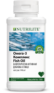
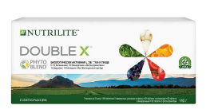
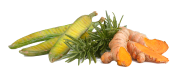

Теңдестірілген тамақтану – өзіңізге және отбасыңызға қамқор болудың, денсаулықтың жалпы күйін қолдаудың, қуат деңгейін арттырудың кілті.



Теңдестірілген тамақтану – өзіңізге және отбасыңызға қамқор болудың, денсаулықтың жалпы күйін қолдаудың, қуат деңгейін арттырудың кілті.
БЕЛСЕНДІ ӘРІ ҰЗАҚ ӨМІР СҮРУ
Қазіргі әлемде әр адамның сау әрі белсенді өмір сүруі өзекті тақырыпқа айналып келеді. Біз тек өмір сүру ұзақтығын көбейтуге ұмтылып қана қоймай, дені сау және белсенді болып ұзақ өмір сүруге назар аударамыз.
Алайда көптеген зерттеулер заманауи адамның дені сау болып өмір сүруіне кедергі келтіретін бірқатар себептер бар екенін көрсетеді: олардың қатарына сыртқы факторлардан бастап жеке әдеттеріне дейінгі көп нәрселер кіреді.
01
Қоректік заттардың жетіспеуі
Қазіргі заманғы тағамдардың құрамында, тіпті бізге таныс және сау болып көрінетіндерінде де маңызды дәрумендер мен минералдар аз. Жемістер мен көкөністер өсетін топырақ ластанған, бұл олардың тағамдық құндылығын төмендетеді. Осыдан денсаулықты сақтау үшін маңызды макро- және микроэлементтердің жетіспеуі туындайды.
02
Нашар тамақтану
Орталық Азия халқы семіздік пен қант диабеті сияқты метаболизмдік синдромдарды тудыратын жылдам көмірсуларға бай макарон және нан-тоқаш өнімдерін негізгі тағам ретінде тұтынады.Сонымен қатар, ағзаны дәрумендермен және микроэлементтермен құнарландыратын балықты, көкөністер мен жемістерді тұтыну әлі де төмен деңгейде.
03
Өмір салты
Жоғары қарқында өмір сүру, стресс, ұйқының және дене белсенділігінің жетіспеуі, дұрыс емес тамақтану әдеті – осылардың барлығы денсаулықтың нашарлауына және сау өмір сүру ұзақтығының қысқаруына ықпал етеді.
ДҰРЫС ТАМАҚТАНУ
Көптеген зерттеулерге сәйкес Орталық Азиядағы ең аз тұтынылатын тағамдар - жемістер (күнделікті тұтыну нормасының 22%ы) мен көкөністер (күнделікті тұтыну нормасының 33%-ы). Өсімдіктердің, дәнді дақылдардың, өсімдік ақуызы мен пайдалы майлардың құрамында болатын қажет дәрумендер мен қоректік заттар бүгін, ертең және күн сайын теңдестірілген тамақтану үшін өте маңызды. Сонымен бірге нан-тоқаш өнімдерін, көбінесе құрамында трансмайлар болатын өнімдерді тұтыну бірінші орында, олар қоректік заттардың өңделуіне және «жақсы» холестериннің түзілуіне кедергі келтіреді.
ҚУАТ
Заманауи әлемде заман ағымына ілесу үшін адамға бұрынғыдан да көбірек қуат керек, ал алдыңғы қатарда болу үшін орасан зор қуат қажет! Алайда қалыпты өмір сүру үшін қажет қуаттың тапшылығын сезінетін адамдардың саны күннен-күнге көбейіп келеді. Қуат бүкіл отбасына қажет.
Бірақ қуаттың күні бойы тұрақты деңгейде болуын қалай қамтамасыз етуге болады? Күні бойына жететін қуат алу үшін күніңізді теңдестірілген таңғы аспен бастаңыз!
ТАҢҒЫ АС
Дұрыс әдет қалыптастырып, күніңізді таңғы аспен бастаңыз!
Ағзаңызды жақсы күйде сақтау үшін дұрыс тамақтану маңызды. Теңдестірілген тамақ сізді қоректендіреді және отбасыңыздың денсаулығын сақтайды.
Таңғы ас сіздің күніңізді сәтті етуге көмектеседі. Қуат жинау үшін таңертең пайдалы азық-түліктерге бай тамақпен «қуаттаныңыз». Күнделікті тамағыңызды минералдар мен фитонутриенттер қосылған Nutrilite мультидәрумендерімен және Омега 3 кешенімен толықтырыңыз.
Күнделікті тамақтануға арналған
Күнді нәтижелі бастап, тиімді жалғастыра алуымыз үшін метаболизм жолдарын қолдайтын, мысалы, балғын көкөністердің құрамында болатын осы маңызды қоректік заттар ағзада жүздеген қызметтерді атқарады: сүйек пен иммундық денсаулықты қолдаудан бастап, тамақты қуатқа айналдыруға дейін.
Кемпірқосақтың барлық түстеріндей түрлі өсімдіктердің құрамында кездесетін мыңдаған табиғи қоректік заттар бүкіл ағзаны пайдалы қасиеттердің кең ауқымымен қамтамасыз етеді, олар антибиотиктік, микробқа қарсы және зеңге қарсы қасиеттерге ие, иммундық жүйені нығайтады және бауыр жасушаларын қорғайды. Тәрелкеңізді түрлі-түсті жемістермен және көкөністермен толықтыру арқылы пайдалы заттарды толық көлемде тұтына аласыз.

Дұрыс май қышқылдары ағзамыздың ең басты жүйесін - жүрек, ми, тері, көз, қан айналымы мен буындардың саулығын сақтайтын жасушаларымызды қолдайды. Сондықтан омега-3 май қышқылдары біздің жалпы денсаулығымыз бен өзімізді жақсы сезінуіміз үшін өте маңызды.
Теңдестірілген тамақтануды жетіспейтін қоректік заттарды толықтыруға көмектесетін дәрумендермен және қоспалармен толықтырыңыз
Фитонутриенттердің бірегей жинағы бар, әрекет ету аясы кең мультидәруменді кешен. Синергияның кешенді әсері: қышқылдану стресінің төмендеу үрдісі, қандағы глюкоза деңгейін қолдау, ақуыздардың, майлардың және көмірсулардың метаболизміне қатысатын ферменттердің үздіксіз жұмыс істеуі. Сонымен қатар, митохондрия деңгейінде тіндердегі қуат алмасудың тиімділігін арттыру
Күнделікті салауатты өмір салтына арналған
Жеткілікті дене белсенділігі - көптеген ауруларға шалдығу қаупін азайтудың негізгі факторы, сонымен қатар дененің сау болуына көмектеседі. Тұрақты дене белсенділігі жүрек-қантамыр жүйесінің саулығын, бұлшықет формасын, сүйек саулығын және дене құрамын (бұлшықет көбірек, май азырақ) қолдайды.
Су адамның өмірлік маңызды жүйелерін қолдайды және қартаюдың алдын алады. Суды жеткіліксіз мөлшерде тұтынудың салдарынан ағзадағы су-тұз теңгерімі сақталмай, ағзаның барлық жүйелерінің жұмысы айтарлықтай бұзылуы мүмкін. Күн сайын 1 кг дене салмағына 20-30 мл су ішу = бүкіл ағзаға үлкен пайда!
Зерттеулер көрсеткендей, дұрыс емес ұйқы қуатқа, тамақтануға және салмаққа қатысты мәселелер тудыруы мүмкін. Сондықтан дұрыс ұйқы кестесін құрып, оны ұстану арқылы ағзаңызға лайық демалыс беріңіз.
өзіңізге және отбасыңызға қамқор болудың, денсаулықтың жалпы күйін қолдаудың, қуат деңгейін арттырудың кілті.

NUTRILITE™ Double Energy - денсаулықты сақтауға, макро және микроэлементтердің тапшылығын толтыруға, күні бойы қажет болатын тұрақты энергиямен қамтамасыз етуге және иммундық жүйені нығайтуға бағытталған кешенді тәсілді ұсынады. DOUBLE X™️ бос радикалдарды бейтараптандырып, ішкі қорғаныс механизмдерін іске қосу арқылы ағзаны тотығу күйзелісінен қорғайды. Омега-3 Кешені жүйке жүйесінің жұмысын жақсартады, терінің, шаш пен тырнақтың саулығын сақтайды, сонымен қатар май алмасуды қалыпқа келтіруге және жүрек-қан тамырлары жүйесін нығайтуға көмектеседі.
Бұл өнімдер ағзаны қорғауға және қалпына келтіруге қажет шешімді ұсынады және дұрыс тамақтанудың бастамасы ретінде пайдалы таңғы аспен жақсы үйлеседі, сарқылмайтын энергия көзі ретінде қызмет етіп, белсенді әрі ұзақ өмір сүруге ықпалын тигізеді.